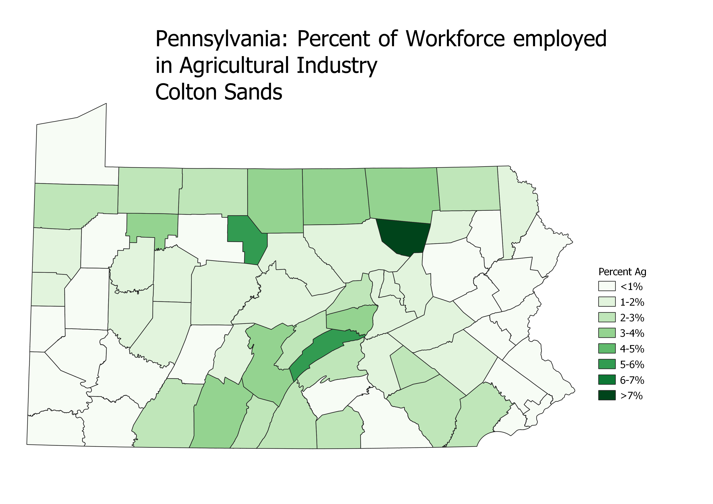

Homework 6: Pennsylvania Chloropleth
Colton Sands
This map shows a cholopleth of the percent of total workers in each county that work in agriculture. I obtained this data by taking the census data, which gave totals for workers and agricultural workers in each county. I then used excel to generate a percentage for each county which is what the gradiant is based on.

Data used for this project
Link to cleaned CSV dataset
Link to geoJSON